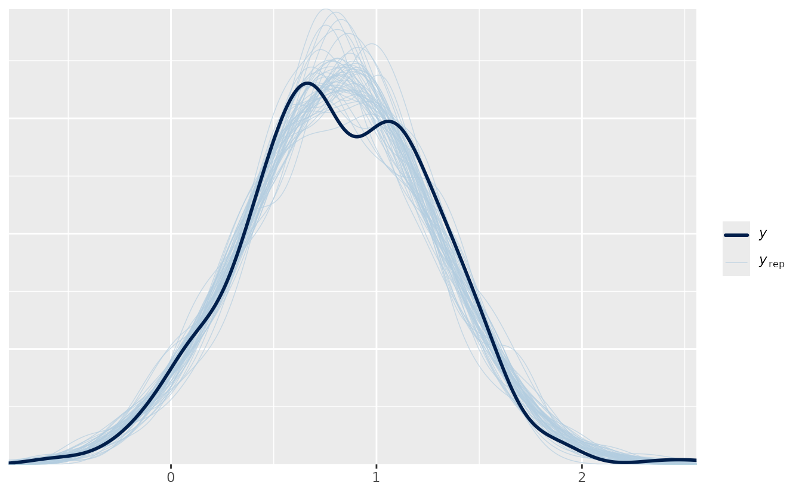
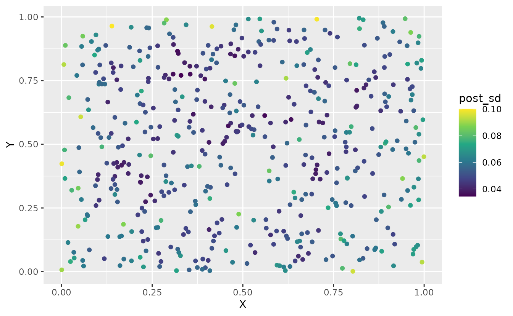
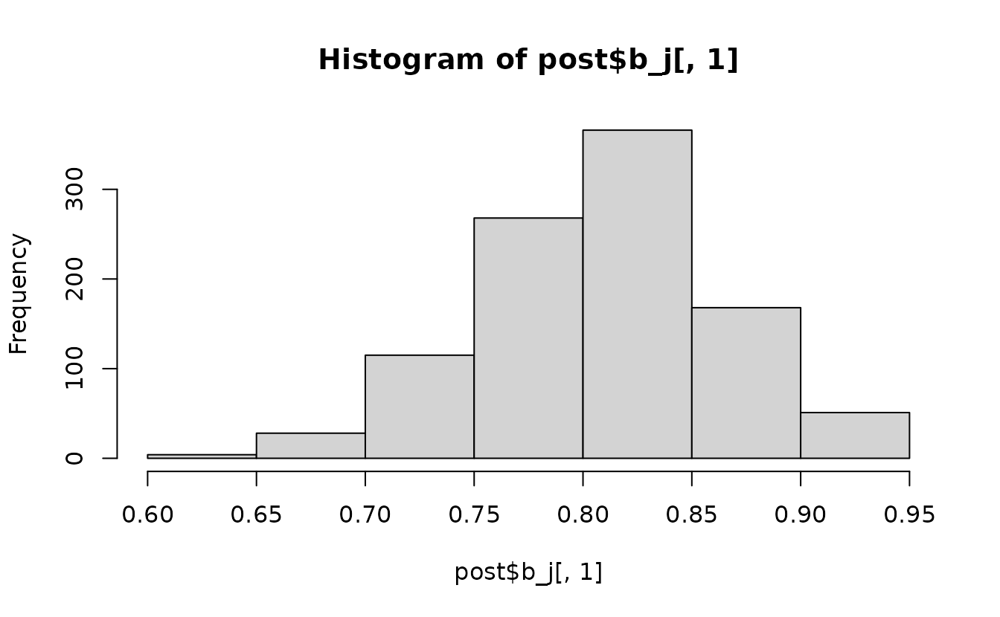
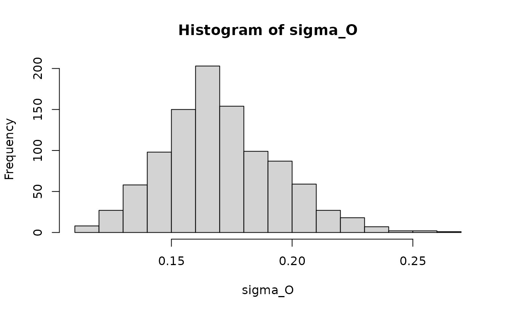

If the code in this vignette has not been evaluated, a rendered version is available on the documentation site under ‘Articles’.
library(ggplot2)
library(dplyr)
library(sdmTMB)
library(rstan) # for plot() method
options(mc.cores = parallel::detectCores()) # use rstan parallel processingBayesian estimation is possible with sdmTMB by passing fitted models
to tmbstan::tmbstan() (Monnahan
& Kristensen 2018). All sampling is then done using Stan
(Stan Development Team 2021), and output
is returned as a stanfit object.
Why might you want to pass an sdmTMB model to Stan?
- to obtain probabilistic inference on parameters
- to avoid the Laplace approximation on the random effects
- to robustly quantify uncertainty on derived quantities not already calculated in the model
- in some cases, models that struggle to converge with maximum likelihood can be adequately sampled with MCMC given carefully chosen priors (e.g., Monnahan et al. 2021)
Simulating data
Here we will demonstrate using a simulated dataset.
set.seed(123)
predictor_dat <- data.frame(
X = runif(500), Y = runif(500),
a1 = rnorm(500)
)
mesh <- make_mesh(predictor_dat, xy_cols = c("X", "Y"), cutoff = 0.1)
# plot(mesh)
# mesh$mesh$n
sim_dat <- sdmTMB_simulate(
formula = ~a1,
data = predictor_dat,
mesh = mesh,
family = gaussian(),
range = 0.3,
phi = 0.2,
sigma_O = 0.2,
seed = 123,
B = c(0.8, -0.4) # B0 = intercept, B1 = a1 slope
)Visualize our simulated data:
ggplot(sim_dat, aes(X, Y, colour = observed)) +
geom_point() +
scale_color_viridis_c()Fitting the model with marginal likelihood
First, fit a spatial random field GLMM with maximum likelihood:
fit <- sdmTMB(
observed ~ a1,
data = sim_dat,
mesh = mesh,
family = gaussian(),
spatial = "on"
)
fit
#> Spatial model fit by ML ['sdmTMB']
#> Formula: observed ~ a1
#> Mesh: mesh (isotropic covariance)
#> Data: sim_dat
#> Family: gaussian(link = 'identity')
#>
#> Conditional model:
#> coef.est coef.se
#> (Intercept) 0.8 0.06
#> a1 -0.4 0.01
#>
#> Dispersion parameter: 0.20
#> Matérn range: 0.32
#> Spatial SD: 0.17
#> ML criterion at convergence: -65.939
#>
#> See ?tidy.sdmTMB to extract these values as a data frame.Adding priors
In that first model fit we did not use any priors (with maximum
likelihood estimation, these also can be thought of as penalties on the
likelihood). For this first model, the priors are implied as uniform on
the internal parameter space. However, sdmTMB provides the option of
applying additional priors. Here we will show an example of applying a
Normal(0, 5) (mean, SD) prior on the intercept and a Normal(0, 1) prior
on the slope parameter. We could guess at the model matrix structure
based on our formula, but we can verify it by looking at the internal
model matrix from the previous fit (using do_fit = FALSE
would save time if you didn’t want to fit it the first time).
head(fit$tmb_data$X_ij[[1]])
#> (Intercept) a1
#> 1 1 -0.60189285
#> 2 1 -0.99369859
#> 3 1 1.02678506
#> 4 1 0.75106130
#> 5 1 -1.50916654
#> 6 1 -0.09514745Each column corresponds to the order of the b
priors:
fit <- sdmTMB(
observed ~ a1,
data = sim_dat,
mesh = mesh,
family = gaussian(),
spatial = "on",
priors = sdmTMBpriors(
# location = vector of means; scale = vector of standard deviations:
b = normal(location = c(0, 0), scale = c(5, 2)),
)
)
fit
#> Spatial model fit by ML ['sdmTMB']
#> Formula: observed ~ a1
#> Mesh: mesh (isotropic covariance)
#> Data: sim_dat
#> Family: gaussian(link = 'identity')
#>
#> Conditional model:
#> coef.est coef.se
#> (Intercept) 0.8 0.06
#> a1 -0.4 0.01
#>
#> Dispersion parameter: 0.20
#> Matérn range: 0.32
#> Spatial SD: 0.17
#> ML criterion at convergence: -62.846
#>
#> See ?tidy.sdmTMB to extract these values as a data frame.Fixing a spatial correlation parameter to improve convergence
Sometimes some of the spatial correlation parameters can be
challenging to estimate with Stan. One option is to apply penalized
complexity (PC) priors with sdmTMBpriors() to the Matérn
parameters. Another option, which can also be used in conjunction with
the priors, is to fix one or more parameters at their maximum likelihood
estimate (MLE) values. Frequently, fixing the parameter
ln_kappa can help convergence (e.g.,
Monnahan et al. 2021). This estimated parameter is
transformed into the range estimate, so it controls the rate of spatial
correlation decay.
Now we will rebuild the fitted object with fixed (‘mapped’)
ln_kappa parameters using the update()
function. We’ll use do_fit = FALSE to avoid actually
fitting the updated model since it’s not necessary.
# grab the internal parameter list at estimated values:
pars <- sdmTMB::get_pars(fit)
# create a 'map' vector for TMB
# factor NA values cause TMB to fix or map the parameter at the starting value:
kappa_map <- factor(rep(NA, length(pars$ln_kappa)))
# rebuild model updating some elements:
fit_mle <- update(
fit,
control = sdmTMBcontrol(
start = list(
ln_kappa = pars$ln_kappa #<
),
map = list(
ln_kappa = kappa_map #<
)
),
do_fit = FALSE #<
)
#> ℹ Initiating `ln_kappa` at specified starting value(s) of:
#> 2.173, 2.173
#> ℹ Fixing or mirroring `ln_kappa`Jacobian adjustments
Adding priors / penalties and fixing spatial parameters represent strategies to help successful convergence for maximum likelihood estimation. If we want to do true Bayesian sampling we need to make one more adjustment to our function call: accounting for non-linear transformations of parameters with Jacobian adjustments.
What are Jacobian adjustments and why do we need them? Jacobian adjustments are necessary when the parameters of a model are transformed in a way that changes their scale or distribution. A good example of this is the estimation of variance parameters. Whether we’re interested in spatial, spatiotemporal, or residual variation, the quantity of interest is usually the variance or standard deviation . These quantities are constrained to be greater than 0, so a widely used estimation strategy is to estimate them in log space, which is not constrained. With ‘ln_sigma’ estimated, ‘sigma = exp(ln_sigma)’ can be calculated internal to a model and used to calculate the likelihood. There are a number of helpful references detailing the math behind this in greater detail including the Stan manual. Without equations, the Jacobian adjustment can be thought of as properly stretching the posterior distribution of parameters to account for the transformation of variables.
In sdmTMB, we can turn these Jacobian adjustments on
with the flag bayesian = TRUE. Applying this to our
fit_mle object,
fit_bayes <- update(fit_mle,
bayesian = TRUE
)
#> ℹ Initiating `ln_kappa` at specified starting value(s) of:
#> 2.173, 2.173
#> ℹ Fixing or mirroring `ln_kappa`It is important to emphasize that this bayesian flag
needs to be enabled to any model passed to Stan; MCMC estimation without
it will lead to biased parameter estimates.
Passing the model to tmbstan
Now we can pass the $tmb_obj element of our model to
tmbstan::tmbstan(). We are only using 1000 iterations and 2
chains so this vignette builds quickly. In practice, you will likely
want to use more (e.g., 2000 iterations, 4 chains).
fit_stan <- tmbstan::tmbstan(
fit_bayes$tmb_obj,
iter = 1000, chains = 2,
seed = 8217 # ensures repeatability
)Sometimes you may need to adjust the sampler settings such as:
See the Details section in ?rstan::stan.
You can also ‘thin’ samples via the thin argument if
working with model predictions becomes cumbersome given a large number
of required samples.
We can look at the model:
fit_stan
#> Inference for Stan model: sdmTMB.
#> 2 chains, each with iter=1000; warmup=500; thin=1;
#> post-warmup draws per chain=500, total post-warmup draws=1000.
#>
#> mean se_mean sd 2.5% 25% 50% 75% 97.5% n_eff Rhat
#> b_j[1] 0.81 0.01 0.05 0.69 0.77 0.81 0.84 0.92 71 1.03
#> b_j[2] -0.40 0.00 0.01 -0.41 -0.40 -0.40 -0.39 -0.38 1923 1.00
#> ln_tau_O -1.66 0.01 0.14 -1.93 -1.75 -1.65 -1.57 -1.37 384 1.00
#> ln_phi -1.63 0.00 0.04 -1.70 -1.65 -1.63 -1.60 -1.56 1147 1.00
#> omega_s[1] -0.09 0.01 0.09 -0.26 -0.15 -0.09 -0.04 0.08 148 1.02
#> omega_s[2] -0.06 0.01 0.09 -0.23 -0.12 -0.06 0.00 0.11 168 1.01
#> omega_s[3] 0.01 0.01 0.09 -0.16 -0.05 0.01 0.07 0.20 228 1.01
#> omega_s[4] -0.21 0.01 0.09 -0.38 -0.27 -0.21 -0.15 -0.02 193 1.01
#> omega_s[5] -0.34 0.01 0.10 -0.53 -0.41 -0.34 -0.27 -0.14 324 1.00
#> omega_s[6] -0.09 0.01 0.10 -0.29 -0.15 -0.09 -0.01 0.12 224 1.01
#> omega_s[7] -0.03 0.01 0.08 -0.19 -0.09 -0.03 0.02 0.15 142 1.02
#> omega_s[8] -0.23 0.01 0.09 -0.41 -0.29 -0.23 -0.17 -0.05 210 1.01
#> omega_s[9] -0.32 0.01 0.09 -0.49 -0.38 -0.32 -0.26 -0.15 206 1.01
#> omega_s[10] 0.28 0.01 0.09 0.12 0.22 0.28 0.34 0.45 173 1.01
#> omega_s[11] -0.16 0.01 0.09 -0.33 -0.22 -0.16 -0.10 0.02 169 1.01
#> omega_s[12] 0.00 0.01 0.10 -0.19 -0.07 0.00 0.06 0.20 321 1.01
#> omega_s[13] 0.18 0.01 0.08 0.04 0.13 0.18 0.24 0.34 157 1.02
#> omega_s[14] -0.09 0.01 0.10 -0.28 -0.16 -0.09 -0.03 0.10 225 1.01
#> omega_s[15] 0.22 0.01 0.09 0.04 0.16 0.22 0.27 0.38 175 1.01
#> omega_s[16] -0.02 0.01 0.09 -0.20 -0.08 -0.02 0.04 0.15 194 1.01
#> omega_s[17] -0.15 0.01 0.09 -0.33 -0.21 -0.15 -0.09 0.03 266 1.00
#> omega_s[18] -0.29 0.01 0.11 -0.49 -0.36 -0.29 -0.22 -0.09 254 1.00
#> omega_s[19] -0.01 0.01 0.09 -0.19 -0.07 0.00 0.06 0.18 179 1.01
#> omega_s[20] 0.02 0.01 0.08 -0.15 -0.04 0.02 0.07 0.18 156 1.01
#> omega_s[21] 0.07 0.01 0.08 -0.07 0.01 0.07 0.13 0.24 163 1.01
#> omega_s[22] -0.02 0.01 0.10 -0.22 -0.09 -0.02 0.06 0.18 219 1.01
#> omega_s[23] 0.12 0.01 0.09 -0.04 0.06 0.11 0.17 0.30 169 1.02
#> omega_s[24] 0.20 0.01 0.10 0.00 0.13 0.19 0.26 0.41 264 1.01
#> omega_s[25] 0.07 0.01 0.08 -0.10 0.02 0.07 0.12 0.23 146 1.01
#> omega_s[26] -0.01 0.01 0.10 -0.21 -0.08 -0.01 0.06 0.18 241 1.01
#> omega_s[27] -0.11 0.01 0.09 -0.28 -0.17 -0.11 -0.05 0.06 224 1.01
#> omega_s[28] 0.11 0.01 0.10 -0.07 0.05 0.11 0.18 0.32 247 1.01
#> omega_s[29] 0.29 0.01 0.09 0.12 0.23 0.29 0.35 0.47 189 1.01
#> omega_s[30] -0.04 0.01 0.09 -0.21 -0.10 -0.04 0.01 0.13 202 1.01
#> omega_s[31] 0.09 0.01 0.08 -0.06 0.04 0.09 0.15 0.25 180 1.01
#> omega_s[32] 0.05 0.01 0.11 -0.17 -0.02 0.05 0.12 0.26 359 1.01
#> omega_s[33] 0.07 0.01 0.10 -0.12 0.01 0.07 0.14 0.28 241 1.00
#> omega_s[34] 0.04 0.01 0.09 -0.13 -0.02 0.04 0.10 0.22 223 1.01
#> omega_s[35] 0.07 0.01 0.09 -0.11 0.01 0.07 0.13 0.24 219 1.01
#> omega_s[36] 0.14 0.01 0.09 -0.04 0.07 0.14 0.20 0.32 240 1.01
#> omega_s[37] 0.16 0.01 0.11 -0.05 0.08 0.16 0.23 0.38 331 1.00
#> omega_s[38] 0.12 0.01 0.09 -0.05 0.05 0.12 0.17 0.30 222 1.01
#> omega_s[39] -0.22 0.01 0.09 -0.40 -0.28 -0.23 -0.16 -0.03 212 1.01
#> omega_s[40] -0.03 0.01 0.09 -0.21 -0.09 -0.03 0.04 0.17 163 1.01
#> omega_s[41] 0.18 0.01 0.09 0.01 0.13 0.18 0.24 0.35 149 1.02
#> omega_s[42] 0.20 0.01 0.09 0.03 0.14 0.20 0.26 0.38 198 1.01
#> omega_s[43] 0.14 0.01 0.10 -0.04 0.07 0.14 0.21 0.34 277 1.01
#> omega_s[44] 0.13 0.01 0.09 -0.05 0.07 0.13 0.19 0.33 192 1.01
#> omega_s[45] 0.09 0.01 0.10 -0.12 0.02 0.09 0.16 0.29 272 1.01
#> omega_s[46] 0.06 0.01 0.09 -0.11 -0.01 0.05 0.12 0.24 217 1.01
#> omega_s[47] 0.30 0.01 0.09 0.13 0.24 0.30 0.37 0.48 188 1.01
#> omega_s[48] -0.25 0.01 0.10 -0.44 -0.31 -0.24 -0.18 -0.07 261 1.00
#> omega_s[49] 0.09 0.01 0.10 -0.11 0.03 0.09 0.16 0.29 251 1.01
#> omega_s[50] -0.09 0.01 0.08 -0.24 -0.14 -0.09 -0.04 0.07 161 1.01
#> omega_s[51] 0.24 0.01 0.11 0.03 0.17 0.24 0.31 0.47 238 1.00
#> omega_s[52] -0.22 0.01 0.11 -0.43 -0.29 -0.21 -0.15 -0.02 279 1.00
#> omega_s[53] 0.03 0.01 0.10 -0.14 -0.03 0.04 0.09 0.22 236 1.01
#> omega_s[54] 0.03 0.01 0.09 -0.14 -0.04 0.02 0.09 0.21 179 1.02
#> omega_s[55] -0.09 0.01 0.11 -0.30 -0.16 -0.09 -0.02 0.13 467 1.00
#> omega_s[56] -0.42 0.01 0.10 -0.62 -0.49 -0.42 -0.34 -0.22 241 1.01
#> omega_s[57] 0.00 0.01 0.11 -0.21 -0.08 0.01 0.08 0.21 288 1.01
#> omega_s[58] -0.21 0.01 0.10 -0.40 -0.28 -0.21 -0.16 -0.02 197 1.01
#> omega_s[59] 0.04 0.01 0.23 -0.40 -0.12 0.04 0.19 0.49 859 1.00
#> omega_s[60] -0.22 0.01 0.26 -0.71 -0.40 -0.21 -0.05 0.31 1225 1.00
#> omega_s[61] -0.27 0.01 0.24 -0.73 -0.43 -0.27 -0.11 0.20 637 1.00
#> omega_s[62] -0.27 0.01 0.24 -0.73 -0.42 -0.27 -0.10 0.19 521 1.00
#> omega_s[63] -0.27 0.01 0.23 -0.70 -0.43 -0.27 -0.13 0.18 645 1.00
#> omega_s[64] 0.07 0.01 0.23 -0.37 -0.09 0.08 0.23 0.51 972 1.00
#> omega_s[65] 0.17 0.01 0.22 -0.25 0.02 0.17 0.33 0.59 808 1.00
#> omega_s[66] 0.16 0.01 0.22 -0.28 0.02 0.16 0.30 0.57 676 1.00
#> omega_s[67] -0.03 0.01 0.22 -0.45 -0.17 -0.02 0.11 0.39 759 1.00
#> omega_s[68] -0.01 0.01 0.25 -0.49 -0.19 -0.01 0.16 0.44 927 1.00
#> omega_s[69] 0.00 0.01 0.22 -0.42 -0.14 0.01 0.15 0.41 745 1.00
#> omega_s[70] 0.00 0.01 0.21 -0.44 -0.13 0.00 0.14 0.41 732 1.00
#> omega_s[71] 0.17 0.01 0.22 -0.29 0.03 0.18 0.31 0.57 642 1.00
#> omega_s[72] -0.11 0.01 0.24 -0.62 -0.27 -0.11 0.05 0.35 859 1.00
#> omega_s[73] -0.14 0.01 0.22 -0.59 -0.29 -0.14 0.00 0.26 545 1.00
#> omega_s[74] -0.13 0.01 0.21 -0.55 -0.28 -0.12 0.01 0.26 572 1.00
#> omega_s[75] -0.38 0.01 0.22 -0.80 -0.52 -0.38 -0.24 0.05 958 1.00
#> omega_s[76] 0.09 0.01 0.19 -0.26 -0.04 0.09 0.21 0.48 912 1.01
#> omega_s[77] 0.09 0.01 0.20 -0.30 -0.04 0.08 0.22 0.49 710 1.00
#> omega_s[78] -0.06 0.01 0.21 -0.45 -0.20 -0.06 0.08 0.39 998 1.00
#> omega_s[79] 0.04 0.01 0.15 -0.27 -0.06 0.04 0.15 0.34 638 1.00
#> omega_s[80] -0.18 0.01 0.23 -0.64 -0.33 -0.17 -0.02 0.23 1011 1.00
#> omega_s[81] -0.07 0.01 0.19 -0.43 -0.20 -0.08 0.06 0.29 844 1.00
#> omega_s[82] -0.15 0.01 0.20 -0.55 -0.29 -0.14 -0.02 0.26 834 1.00
#> omega_s[83] -0.02 0.01 0.23 -0.46 -0.17 -0.02 0.14 0.41 978 1.00
#> omega_s[84] 0.11 0.01 0.20 -0.28 -0.02 0.11 0.24 0.50 1071 1.00
#> omega_s[85] -0.30 0.01 0.21 -0.71 -0.44 -0.30 -0.16 0.12 1112 1.00
#> lp__ 136.24 0.54 9.17 118.78 130.29 136.85 142.47 153.21 284 1.00
#>
#> Samples were drawn using NUTS(diag_e) at Sat Nov 22 21:53:05 2025.
#> For each parameter, n_eff is a crude measure of effective sample size,
#> and Rhat is the potential scale reduction factor on split chains (at
#> convergence, Rhat=1).The Rhat values look reasonable (< 1.05). The
n_eff (number of effective samples) values mostly look
reasonable (> 100) for inference about the mean for all parameters
except the intercept (b_j[1]). Furthermore, we can see
correlation in the MCMC samples for b_j[1]. We could try
running for more iterations and chains and/or placing priors on this and
other parameters as described below (highly recommended).
Now we can use various functions to visualize the posterior:
plot(fit_stan)
#> 'pars' not specified. Showing first 10 parameters by default.
#> ci_level: 0.8 (80% intervals)
#> outer_level: 0.95 (95% intervals)
pars_plot <- c("b_j[1]", "b_j[2]", "ln_tau_O", "omega_s[1]")
bayesplot::mcmc_trace(fit_stan, pars = pars_plot)
bayesplot::mcmc_pairs(fit_stan, pars = pars_plot)
Posterior predictive checks
We can perform posterior predictive checks to assess whether our
model can generate predictive data that are consistent with the
observations. For this, we can make use of
simulate.sdmTMB() while passing in our Stan model.
simulate.sdmTMB() will take draws from the joint parameter
posterior and add observation error. We need to ensure nsim
is less than or equal to the total number of post-warmup samples.
set.seed(19292)
samps <- sdmTMBextra::extract_mcmc(fit_stan)
s <- simulate(fit_mle, mcmc_samples = samps, nsim = 50)
bayesplot::pp_check(
sim_dat$observed,
yrep = t(s),
fun = bayesplot::ppc_dens_overlay
)
See ?bayesplot::pp_check. The solid line represents the
density of the observed data and the light blue lines represent the
density of 50 posterior predictive simulations. In this case, the
simulated data seem consistent with the observed data.
Plotting predictions
We can make predictions with our Bayesian model by supplying the
posterior samples to the mcmc_samples argument in
predict.sdmTMB().
pred <- predict(fit_mle, mcmc_samples = samps)The output is a matrix where each row corresponds to a row of predicted data and each column corresponds to a sample.
dim(pred)
#> [1] 500 1000We can summarize these draws in various ways to visualize them:
sim_dat$post_mean <- apply(pred, 1, mean)
sim_dat$post_sd <- apply(pred, 1, sd)
ggplot(sim_dat, aes(X, Y, colour = post_mean)) +
geom_point() +
scale_color_viridis_c()
ggplot(sim_dat, aes(X, Y, colour = post_sd)) +
geom_point() +
scale_color_viridis_c()
Or predict on a grid for a given value of a1:
nd <- expand.grid(
X = seq(0, 1, length.out = 70),
Y = seq(0, 1, length.out = 70),
a1 = 0
)
pred <- predict(fit_mle, newdata = nd, mcmc_samples = samps)
nd$post_mean <- apply(pred, 1, mean)
nd$post_sd <- apply(pred, 1, sd)
ggplot(nd, aes(X, Y, fill = post_mean)) +
geom_raster() +
scale_fill_viridis_c() +
coord_fixed()
ggplot(nd, aes(X, Y, fill = post_sd)) +
geom_raster() +
scale_fill_viridis_c() +
coord_fixed()
Extracting parameter posterior samples
We can extract posterior samples with
rstan::extract(),
post <- rstan::extract(fit_stan)The result is a list where each element corresponds to a parameter or set of parameters:

As an example of calculating a derived parameter, here we will calculate the marginal spatial random field standard deviation:
ln_kappa <- get_pars(fit_mle)$ln_kappa[1] # 2 elements since 2nd would be for spatiotemporal
ln_tau_O <- post$ln_tau_O
sigma_O <- 1 / sqrt(4 * pi * exp(2 * ln_tau_O + 2 * ln_kappa))
hist(sigma_O)
Extracting the posterior of other predicted elements
By default predict.sdmTMB() returns the overall
prediction in link space when a tmbstan model is passed in. If instead
we want some other element that we might find in the usual data frame
returned by predict.sdmTMB() when applied to a regular
sdmTMB model, we can specify that through the sims_var
argument.
For example, let’s extract the spatial random field values
"omega_s". Other options are documented in
?predict.sdmTMB().
fit_pred <- predict(
fit_mle,
newdata = nd,
mcmc_samples = samps,
sims_var = "omega_s" #<
)
nd$spatial_rf_mean <- apply(fit_pred, 1, mean)
nd$spatial_rf_sd <- apply(fit_pred, 1, sd)
ggplot(nd, aes(X, Y, fill = spatial_rf_mean)) +
geom_raster() +
scale_fill_gradient2() +
coord_fixed()
ggplot(nd, aes(X, Y, fill = spatial_rf_sd)) +
geom_raster() +
scale_fill_viridis_c() +
coord_fixed()